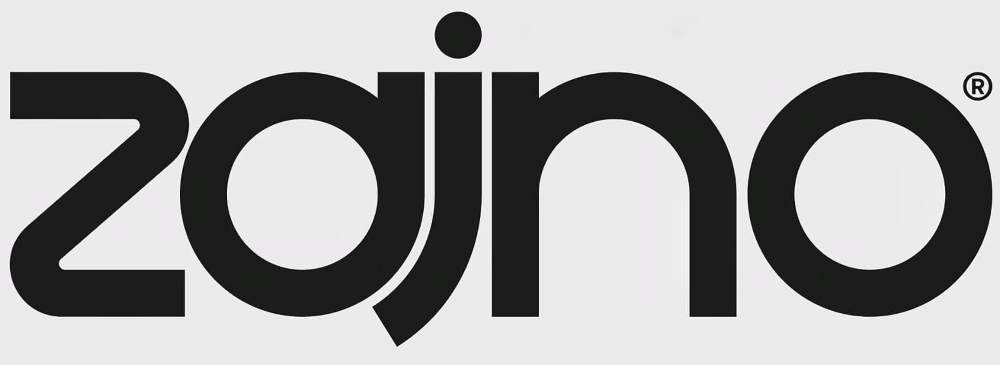

Work
At Zajno, we know your time is precious, and that’s why we prioritize simplicity and efficiency. Our team has the expertise and creativity to handle everything from research and planning to custom design and development, freeing you from the burden of micromanagement.
©2025-26
01
Design & Development of the
website's 3 pages
Brightmark
Technology

02
Homepage design, 2D illustration
animations & visual identity
Ooki
Crypto

03
Full-cycle website
creation and branding for it
8Finance
Crypto

Work
We're a digital design studio that's all about breaking the mold! We don't do boring websites or ordinary apps - we specialize in crafting the wildest, most unconventional digital experiences out there.